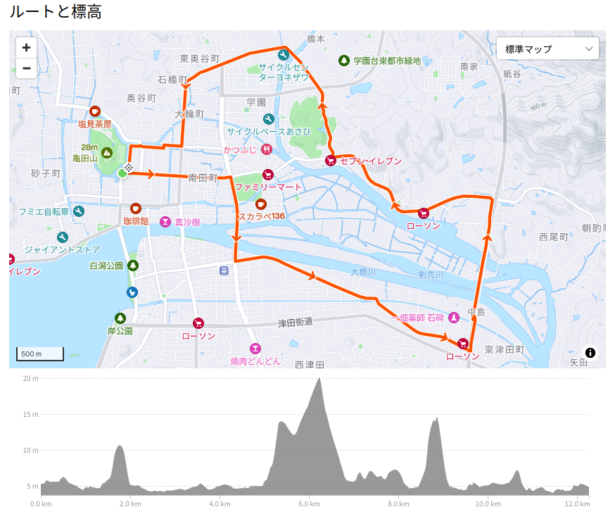

Garmin Edge Explore 2 でルート探索

以前にサイコンを Garmin 製に買い換えた話をしたが，このとき購入した Garmin Edge 130 plus はナビゲーション機能が貧弱なため，ナビに関しては復活した trimm ROLLIN を使っていた。
ただ trimm ROLLIN は Strava と相性が悪くてですね。 Strava で作ったルートを trimm ROLLIN にインポートしてもまともにナビゲーションしてくれないのですよ。
というわけで，年末にも Garmin Edge の上位機種に買い換えようかなぁ，とぼんやり考えていたのだが，恐ろしい動画記事を見てしまった。
は？ Garmin Edge シリーズって盆明けに値上げするの1？ えー，今のうちに買っとかなきゃ（←扇動される消費者）。
Garmin Edge は，最安の 130 plus の他に500シリーズ（530, 540），800シリーズ（840），1000シリーズ（1040, 1050）とあって，それとは別に Explore 2 というルート探索・ナビゲーション機能に特化した製品もあるらしい。 個人的にはガチのトレーニングをするつもりはないので Garmin Edge Explore 2 でええんちゃうん？ というわけで発注した。

- GARMIN(ガーミン)Edge Explore 2 Power サイクルコンピューター【日本正規品】
- ガーミン(GARMIN) (Release 2022-09-22)
- スポーツ用品
- B0BD7FGVR6 (ASIN), 0753759310660 (EAN), 753759310660 (UPC)
- 評価
Garmin 製のルート探索・ナビゲーション特化のサイコン。タッチパネル助かる。充電ポートは USB-C (not PD)。また別売りの変換ケーブルを使いモバイルバッテリからパワーマウント経由で給電することもできる。ライドタイプが「ロード」「屋内」「グラベル」の3種類しかない。 Live Segment 非対応。
Garmin Edge Explore 2 を使ってみる
セットアップで往生する
早速来たので開梱してセットアップしようとしたが，完全放電しとるがな。 充電するところからかい！ 充電用のポートが USB-C なのは助かるが，残念ながら Power Delivery には対応してないようだ。
ある程度充電したら起動したぽいので，スマホアプリの Garmin Connect とペアリングする。
このとき 130 plus に登録してたセンサのペアリング情報を Explore 2 にコピーしてくれた。
マジ助かる。
でもこのあとソフトウェアの更新が始まり，完全に使えるようになったのは数時間後だった。
こういうのは出荷時にベンダ側でやっておいてほしい orz
サイズ
大きさの比較はこんな感じ。
左が 130 plus，右が Explore 2，真ん中が Galaxy S22 (6.1インチスマホ) である。 ちなみに Explore 2 はスマホの倍以上の厚みがある。
機能上の特徴
最初に挙げた動画記事では Explore 2 の機能として 130 plus レベルのトレーニング機能とナビゲーション機能を併せたようなものと述べていたが，正直に言ってトレーニング機能は 130 plus よりも更に劣る。
まずライドタイプが「ロード」「室内」「グラベル」の3つしかなく，変更も追加もできない。 たとえば「通勤」とかは選べない。
また Garmin Connect で作成したワークアウトを利用することができない。 私は心臓リハビリ用に「ウォームアップ30秒＋バイク30分（ケイデンス70〜80の範囲を外れると警告）＋クールダウン1分」みたいな感じでワークアウトを定義してフィットネスバイクで使っているが Explore 2 でこの定義を使うことはできなかった。
Live Segment に対応していない。 Garmin Edge では Strava と Garmin Connect を連携させて「セグメント」ルート走行中の状態（ラップタイムや速度など）をリアルタイムでモニタできるのだが Explore 2 だけがこれに対応していなかった。 まぁ，リアルタイムでモニタできなくても記録はちゃんと残るので致命的な問題ではないのだが。
一方で Explore 2 の特徴のひとつはディスプレイがタッチパネルになっていることである。 このため物理ボタンは最小限になっている。 他の Garmin Edge 製品でタッチパネルを備えているのは800シリーズと1000シリーズで，500シリーズはタッチパネルじゃない。 これで500シリーズより（ちょっとだけ）安いんだぜ。
ナビ機能は流石によくできている。 タッチパネルなので指2本のピンチ操作で地図のズームが出来る。 地図上の建物とかの情報が古い気がするが（既に潰れたコンビニとか載ってた）致命的ではないし，いいか。
地図の詳細度を指定できるが，これを「最高」にすると街中では使い物にならないくらいゴチャゴチャした見た目になった。 特に松江市の中心部は（城下町だったせいか）古い路地と新しく整備された道路が錯綜していてホンマに分かりにくいのだ。 逆に中心部から外れたところは何もなさすぎて地図に何も表示されなくなる2。 熊野大社に行く途中の道とか一本道みたいになっていた。 ままならないものである（笑） なお，ナビゲーション中に地図の詳細度を変えると地図表示がおかしくなるみたい。 気ぃつけなはれや！
スマホの Garmin Connect と連携させてナビゲーション中の（右に曲がれとか左に曲がれとかの）指示を音声でアナウンスできる（声はスマホから鳴る）。 サイコンの画面ばかり見て走るわけに行かないので音声アナウンス機能はありがたい。 ただ日本語がカタコトで聞き取りにくい。 この辺は trimm ROLLIN はよくできてるよなぁ。
トレーニング機能とナビゲーション機能の両方が欲しいなら800シリーズまたは1000シリーズを強くおすすめする。 500シリーズは中途半端な感じ。 やっぱタッチパネルは要るですよ。
私は，当面の間，平日の通勤や心臓リハビリでは 130 plus を，週末のサイクリングでは Explore 2 を，という感じに使い分けることにした。 まぁ，ちょっと高めのお勉強代と割り切るか。
パワーマウントを使った給電
今回買ったセットにはパワーマウントが付いている。 これは eBike からの給電を想定していて，走行中も充電しながらサイコンを使うことが出来る。
別売りの USB-A への変換ケーブルを使うとモバイルバッテリ（USB-A の口がついてること）に接続して充電することが出来る。 こんな感じ。
ちょうど手元にコンパクトサイズのモバイルバッテリが余ってた3 ので利用する。 モバイルバッテリはフレームバッグに格納して，バッグのケーブル穴からケーブルを通せば配線がスッキリする。
モバイルバッテリを繋いだ状態で近所を走ってみたが Explore 2 を使いつつバッテリの充電状態もちゃんと回復していた。 発熱も大丈夫っぽい。 これならサイコンのバッテリ状態を気にしなくて済むな。 よーし，うむうむ，よーし。
ちなみに Garmin 純正の拡張バッテリを使う手もある。 でも，なんか不格好だな。 値段高いし。 私はいいや（笑）
縁結び大橋を渡ってみたい
さて，サイコンも新しくなったし，今まで行ったことのない場所へ行ってみよう。 以前から考えていたが，広島在住の頃にできたという縁結び大橋を自転車で渡れると聞いたので，この機会に渡ってみたい。 今回のルートは松江城前を起点としてこんな感じに組んでみた。

大雑把に
- 松江城前
- くにびき大橋南下
- 縁結び大橋北上
- 楽山公園
- 島大通り
- 惣門橋通り
- 松江城前
という巡回ルート。 早速行ってみよう。
おお。 ここから入るのか。 では！
橋からの眺めはこんな感じ。
おお！ これはなかなか絶景だ。

勾配はさほどキツくなく，私の貧弱な脚力でも問題なく走れた。 これは楽しい。
松江市の東は私の（遊び場としての）テリトリから外れているので知らない場所が多いんだよな。 Strava と Explore 2 を組み合わせて，これからも楽しくサイクリングとお散歩カメラを続けよう。
ブックマーク
参考

- ガーミン(GARMIN) GARMIN(ガーミン) Edge PowerMountケーブル USB-A 400mm【日本正規品】
- ガーミン(GARMIN) (Release 2022-09-22)
- エレクトロニクス
- B0BD6SH1LH (ASIN), 0753759308124 (EAN), 753759308124 (UPC)
- 評価
GARMIN Edge Explore 2 のパワーマウントのケーブル端子を USB-A に変換する。スマホ用のモバイルバッテリ（要 USB-A ポート）に繋いで充電可能。

- モバイルバッテリー 軽量 小型 薄型 【業界157g超軽量モバイル・バッテリー】10000mah 大容量 22.5W急速充電 タイプC出力 2.4A出力 PD&QC3.0対応 Type-C/USB出力ポート PSE認証済 iPhone/Android各種対応 (ブラック)
- MOXNICE
- B0C5HLDYSM (ASIN)
- 評価
コンパクトでランニングポーチ等に楽々入る。 Power Delivery 対応。

- Canon コンパクトデジタルカメラ PowerShot ZOOM 写真と動画が撮れる望遠鏡 PSZOOM
- キヤノン (Release 2020-12-10)
- エレクトロニクス
- B08L4WKDZ7 (ASIN), 4549292179675 (EAN)
- 評価
望遠鏡型コンパクトデジカメ。メモリと充電器（要 Power Delivery）は別に用意する必要がある。使い勝手はまぁまぁ。

- GARMIN ガーミン エッジ(Edge) 130plus 日本版 本体のみ GPS ブルートゥース Android/iOS対応 (010-02385-05)【日本正規品】
- ガーミン(GARMIN)
- スポーツ用品
- B08BZ5T9NZ (ASIN), 0753759265137 (EAN), 753759265137 (UPC)
- 評価
Garmin 製のいっちゃん安いサイクルコンピュータ。白黒液晶で筐体も小さいけど視認性は問題ない。ボタンが硬くてちょっと操作し辛い。ルートナビゲーションはホントに簡易表示のみなのでナビ機能が欲しい人は上位機種を検討したほうがいい。ほかは申し分なし。

- GARMIN(ガーミン) vívosmart 5 Black S/M バンド型スマートウォッチ 心拍計【日本正規品】
- ガーミン(GARMIN) (Release 2022-04-21)
- エレクトロニクス
- B09XGYX7JF (ASIN), 0753759301590 (EAN), 753759301590 (UPC)
- 評価
サイクルコンピュータと Bluetooth または ANT+ で連携可能なスマートバンド（活動量計）として購入。 Garmin 製なのに自前では GPS 機能がない（スマホの GPS 機能と組み合わせて使う）。活動量計としての機能は十分というかありすぎる（笑）

- ミニサイズ Shokz OpenRun Mini 骨伝導イヤホン 公式ストア正規品 ワイヤレス 急速充電 驚きの通話品質 IP67防塵防水 bluetooth5.1 2 30日間返品無料 コズミックブラック
- Shenzhen Shokz Co., Ltd.
- エレクトロニクス
- B09TVLHJ1X (ASIN), 4512223694288 (EAN)
- 評価
以前のものはマルチファンクションキーが利かなくなったので Black Friday の安売りのタイミングで買い替え。私のように頭の小さい人向け（笑） 値段並みの音質はある，と思う。耳が自由って素晴らしい。

- Let’s go ahead （『風都探偵』挿入歌）
- Machico (メインアーティスト)
- avex trax 2022-08-22 (Release 2022-08-22)
- MP3 ダウンロード
- B0B8D1S61W (ASIN)
- 評価
アニメ版仮面ライダーW「風都探偵」の劇中歌。mora で高解像度版が買える。いかにもアニソンぽい曲で大変よろしい！

- マイクロレボリューション
- TrySail (メインアーティスト)
- Sony Music Labels Inc. 2024-08-07 (Release 2024-08-07)
- MP3 ダウンロード
- B0DB5N3HJL (ASIN)
- 評価
双見酔さん原作のアニメ「ダンジョンの中の人」のOP曲。ノリのいい曲。mora で高解像度版が買える。双見酔さんの作品はよい。
-
ライドプロフィール→ナビゲーション→地図→地図情報 で，何故か無効になっていた “CN Japn NT 2022.10-Mapple HH ALL” を有効にしたら改善した。なんで無効になってたのだろう。ちなみに日本版 Explore 2 の地図情報には（データ名で分かる通り）昭文社の地図情報が入ってるらしい。でも2022年の地図ぽいんだよなぁ。2022年は日本版 Explore 2 が発売された年なので，地図の更新はほぼされてないってことか？ ヘルプ見ても2022年以降のデータはないっぽいんだよなー ↩︎
-
今のスマホが無線給電に対応しているので，無線給電できるモバイルバッテリをメインに使っている。コンパクトサイズのモバイルバッテリについては，手元にあるものは販売終了していて新版が出ているみたい。 ↩︎